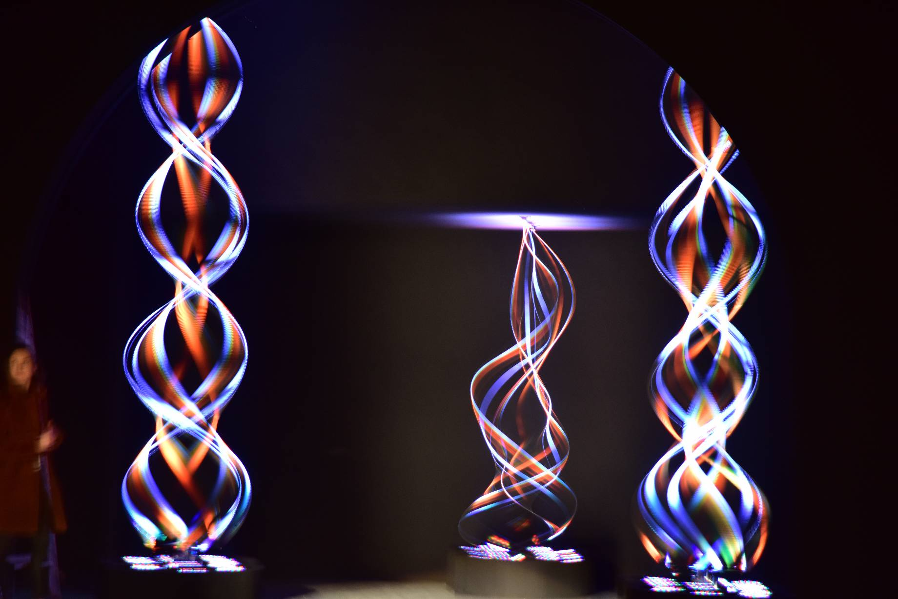
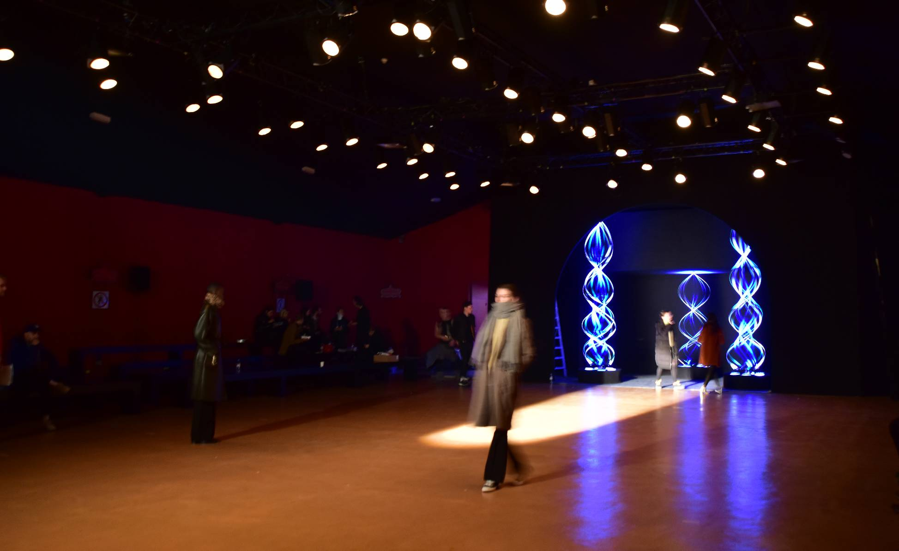
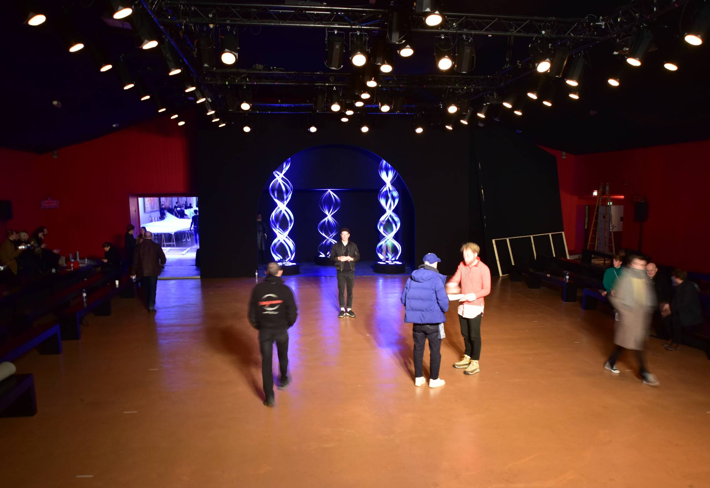
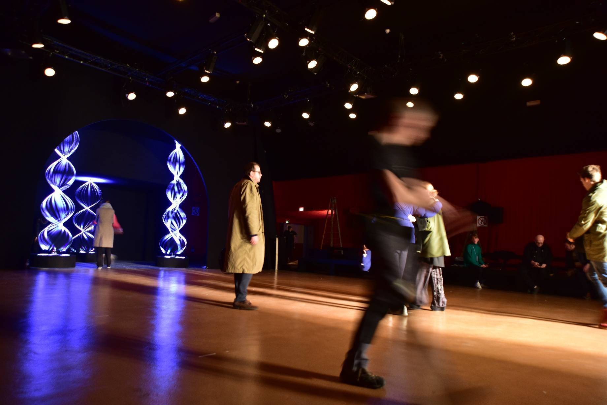
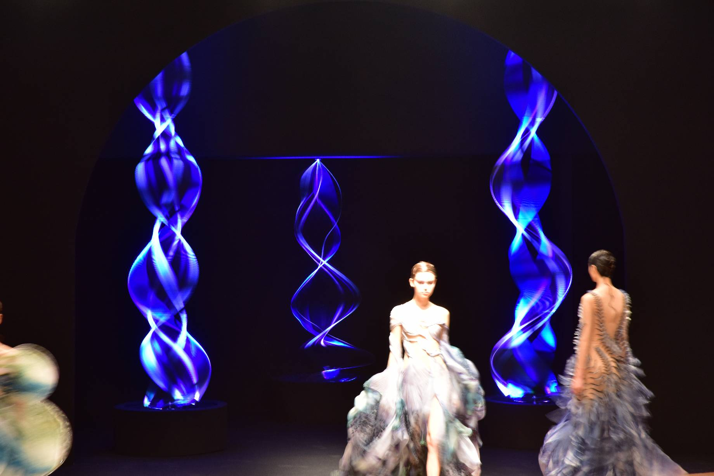
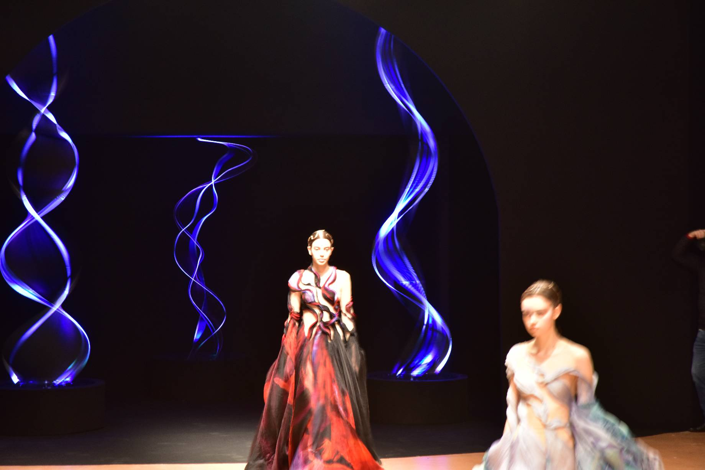
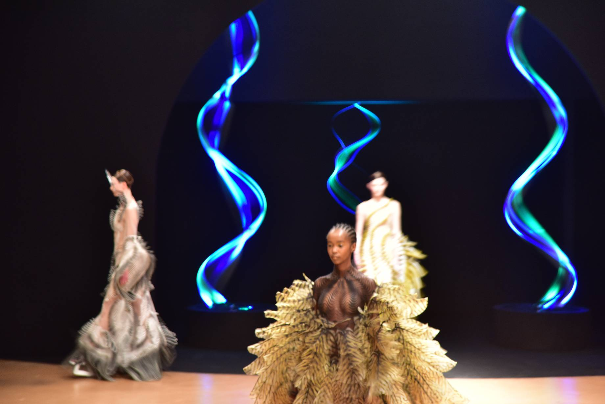
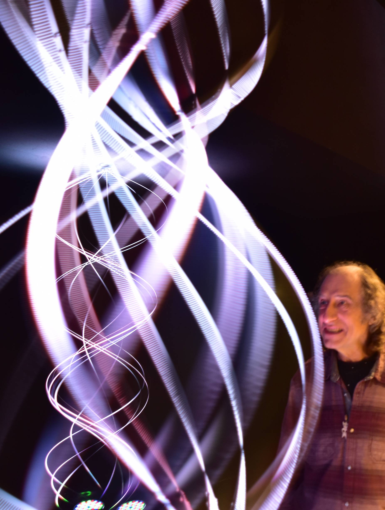

Paris Fashion Week 2020

Haute couture designer Iris van Herpen's new collection Sensory Seas with Paul Friedlander's spinning light sculptures, 20th January 2020.

The venue, Cirque D'Hiver on the night before the show. It's cold, the models are wearing their coats as they take a first look at the space.

The show is still not quite ready last minute plans and meetings are ongoing.

To photograph the light sculptures well I need around a tenth of a second, it makes for some interesting motion blur sometimes.

The show begins its theme Sensory Seas.

Many thanks to Iris van Herpen, Salvador Breed for sounds, 6UP for production and in particular constructing the 'black hole' gateway in which my light sculptures were placed and through which all the models passed to come out onto the open space.

